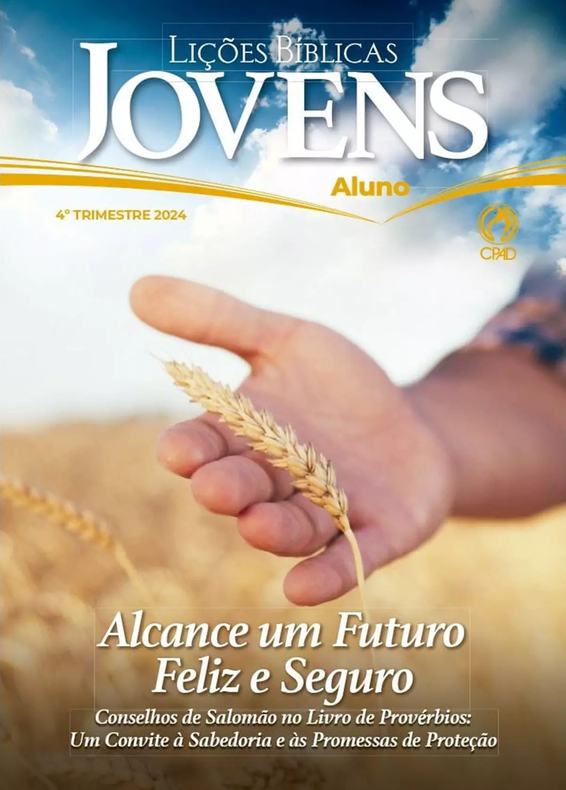

Lição Jovens 1° trimestre 2025 - CPAD
titulo: A Verdadeira Religião
subtítulo: Um Convite à Autenticidade na Carta de Tiago
01 UM CONVITE À AUTENTICIDADE
02 AUTENTICIDADE EM MEIO AS PROVAS E TENTAÇÕES
03 A AUTENTICIDADE QUE LEVA A PRÁTICA DA PALAVRA
04 A AUTENTICIDADE CONTRA A PARCIALIDADE
05 A AUTENTICIDADE CONTRA UMA FÉ MORTA
06 A AUTENTICIDADE DE UMA LINGUAGEM SADIA
07 AUTENTICIDADE E SABEDORIA
08 AUTENTICIDADE, UM ANTIDOTO CONTRA AS PAIXÕES DESTE MUNDO
09 AUTENTICIDADE E JULGAMENTO ALHEIO
10 AUTENTICIDADE DIANTE DAS INCERTEZAS DA VIDA
11 AUTENTICIDADE DIANTE DAS RIQUEZAS
12 AUTENTICIDADE E PACIÈNCIA
13 CONSELHOS PARA UMA VIDA AUTENTICA
Lição Jovens 4° trimestre 2024 - CPAD

Tema: ALCANCE UM FUTURO FELIZ E SEGURO
Conselhos de Salomão no livro de Provérbios: Um convite à sabedoria e às promessas de proteção.
Comentarista: Marcelo Oliveira
01 - O LIVRO DE PROVÉRBIOS: UM CONVITE À SABEDORIA
02 - SABEDORIA, PROTEÇÃO E CONFIANÇA
03 - UM CORAÇÃO PROTEGIDO
04 - PROTEÇÃO CONTRA A IMORALIDADE
05 - PROTEÇÃO CONTRA A PREGUIÇA
06 - A NATUREZA DA SABEDORIA E O SENTIDO DA VIDA
07 - PROTEÇÃO CONTRA A INSENSATEZ
08 - PROTEGENDO O SEU DINHEIRO
09 - PROTEGENDO A SUA BOCA
10 - PROTEÇÃO CONTRA O DESCONTENTAMENTO
11 - PROTEÇÃO CONTRA A INVEJA
12 - PROTEÇÃO CONTRA OS VÍCIOS
13 - PROTEGENDO-SE COM INTEGRIDADE NA SOCIEDADE